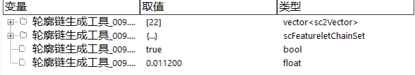

轮廓链生成工具的作用是将vector

| 分类 | 参数名称 | 参数描述 |
|---|---|---|
| 属性窗口 | 是否闭合 | 选择“是”，则生成的轮廓链是闭合的。 |
| 图像窗口 | 无 | 无 |
| 数据链 | 轮廓边界点 | 数据类型为vector |
| 高级界面 | 无 | 无 |
| 分类 | 参数名称 | 参数描述 |
|---|---|---|
| 监视窗口 | 轮廓边界点 | 数据类型为vector |
| 轮廓链 | 数据类型为scFeatureletChainSet，并应用于轮廓到轮廓定向距离工具。 | |
| 执行结果 | 工具执行结果。 | |
| 执行时间 | 工具执行时间。 | |
| 图像窗口 | 无 | 无 |
| 数据链 | 轮廓链 | 供后序工具使用，同监视窗口的轮廓链参数。 |
无
无
参见“\Samples\轮廓链生成工具.gvp”。